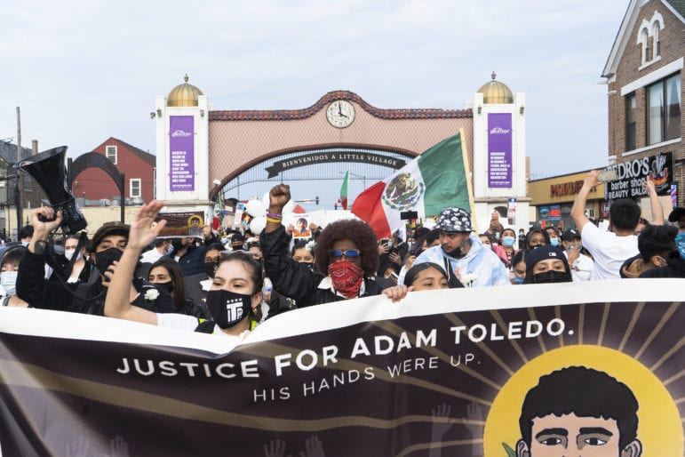

Why has police brutality persisted in the United States? What makes it such a difficult problem, and where does data fit into all this?
On March 29, 2021, Adam Toledo, a 13-year-old Latino boy, was shot and killed by Chicago Police Department officer Eric Stillman in the Little Village neighborhood on the West Side of Chicago. A few hours after the shooting, the CPD described the incident in a tweet as an "armed confrontation."
Each dot on the map underneath represents a fatal police shooting, from
the Washington Post's Fatal Force
dataset, containing records of every fatal shooting in the United States by a police officer in the line of duty
since January 1st, 2015. Adam Toledo is one of them.
It barely begins to capture the full picture of police brutality in the United States – for example, George Floyd, whose murder sparked
nationwide and global protests for the #BlackLivesMatter movement and against police brutality, isn't in this dataset because there was
no gun involved.
The people and stories above might be familiar to you – they've flashed across major news outlets along with countless others, to the point that
some, especially with the privilege to be detached, might be a little desensitized to the issues of police brutality. However, we need to better understand how serious of an issue this is
beyond the sheer number of people killed.
Police brutality is a systemic issue with multiple facets, from racism to the militarization of our police to missing data for how serious the problem actually is. If we look at police killings for the year 2021 thus far (data collected up to April 21, 2021), we find that there have only been three days where there have beenn zero police killings.
Through examining the various layers of police brutality, we hope to deepen understanding surrounding this complex issue. We'll start with an examination into how police brutality intersects with race and trickles down further into covering up deaths. We'll then examine the militariziation of the police as well as stagnated avenues to change, and close with highlighing the significance of missing data.
Estimations for the the percentage of race and Hispanic origin (as of July 1, 2019) are depicted in this pie chart. If we dive deeper into deaths by police brutality, we see some shifting in the distribution.
From the growth of each sector, we find significant shifts particularly with Black deaths – while Black people constitute approximately 13.4% of the overall population, they make up 28% of deaths by police brutality, from Mapping Police Violence's data collected from 2013 to present day.
Like one in 13 Black Americans, Lamont Perry was born with sickle cell trait, and he died while fleeing the police through the woods of Wadesboro, North Carolina. The state medical examiner attributed his death to sickle cell trait, concluding that he had died by accident.
On May 15, 2021, the NYTimes revealed a detailed examination of autopsy records, court filings, and police reports – bringing to light how many Black people in custody whose deaths were labeled as undetermined, accidental, or natural. Sickle cell trait, the possession of one of the two genes necessary for sickle cell disease, affects millions of people throughout the world but is more common among Black people. The condition is almost always benign on its own, but American pathologists have used the condition to rule the in-custody deaths of Black people as accidents or natural occurrences.
Adam Toledo was killed in Little Village, a predominantly Mexican community on Chicago's West Side. Many neighborhood residents put in effort to argue that his death didn't matter because he had a gun – they raised concerns that the thirteen year-old was a gang member, and some even vilified Adam and his family. While it's unclear if he was a member, the mere assumption of him being one flattens his death to a consequence from being with the wrong crowd, rather than a tragedy that reflects disinvestment from communities, housing and racial discrimination, and efforts to curb gun violence.
According to this mom, Adam was a happy boy who liked to ride bikes with his siblings and play with Hot Wheels cars.
In the early 1990s, Congress authorized the Department of Defense to transfer excess military equipment to law enforcement agencies across the United States. In 1997, this program was made permanent under section 1033 of the National Defense Authorization Act (NDAA), and henceforth referred to as the "1033 program" in reporting. The kinds of equipment made available to Law Enforcement Agencies (LEAs) under the program vary, from relatively benign, uncontrolled items, such as raincoats and office equipment, to rifles and armored vehicles, which are categorized as controlled equipment. Even today, the majority of the items distributed are in the former category, and represent an efficient way to avoid wasting taxpayer funds. However, even though controlled items loaned are far fewer in number, their values, and the ensuing savings afforded to LEAs, dominate the total value of equipment distributed.
This stacked area plot makes use of data from the Massachusetts ACLU, which tracked all of the equipment provided to LEAs since the early 1990s. Tracked along with the dollar value of items, and the agencies to which they are provided, are DoD "DEMIL Codes", which guide policies for demilitarizing different types of military equipment when they leave DoD control. They can be used to roughly distinguish between the categories of equipment given to LEAs through the 1033 program.
A : Mostly benign, uncontrolled materials, which "present a low risk when released out of DoD control.
B and Q: Require "mutilation to the point of scrap" either worldwide, or when disposed of outside of the United States. Inlcludes items like night vision goggles, some electronic equiipment, and certain vehicles.
D : Includes most firearms, which require destruction beyond the opint of repair and reuse.
C : Require removal and destruction only of certain key components. Includes most vehicles, from helicopters to trucks, to the Armored Personnel Carriers popular with SWAT teams and riot police.
Notably, after the end of large scale deployments in Iraq around 2010, the value and number of items with DEMIL code "C" rose massively.
It is important to note that not all of the armored vehicles used by police in the United States are acquired through this program. In fact, many of the largest police departments are sufficiently well funded to afford purchasing these items outright. However, this data demonstrates that amid growing outrage against police tactics and violence, many LEAs, across the country are only becoming better armed and equipped.
Louisville police officers used a battering ram to enter Breonna Taylor's apartment at around midnight on March 13, investigating whether the apartment was being used to receive packages for a drug selling operation. Breonna Taylor's boyfriend, Kenneth Walker, feared that her ex-boyfriend was trying to break in and fired a gun once after the police broke the door off its hinges. The police responded by firing back, and their shots struck Breonna five times. While she received no medical attention, the officers at the scene called an ambulance to the scene and aided their shot colleague.
Vehicles and tactics used to fight the "War on Terror" are now being deployed in response to domestic protests and used to execute these kinds of no-knock warrants. Breonna Taylor was killed during a drug raid on her home – she was not killed by a SWAT team, rather a police team using SWAT team tactics without the relevant training.
Breonna Taylor was a big sister, daughter, godmother, and a best friend who dreamed of caring for the tiniest, most helpless of humans. She planned to study to become a nurse.
This stacked bar chart shows the number of bills introduced in each U.S. state's legislature, as well as their status as of earlier this month. The data was obtained from the National Conference of State Legislatures, which utilizes LexisNexis to catalog bills. To fit on the page, only the 20 states with the largest number of bills are included. Every state legislature functions slightly differently, and operate under their own political climates, leading to natural variations in the number of bills and their passage rates. Minnesota, rocked by the killing of George Floyd in 2020, saw a large number of introduced bills, along with a high failure rate, indicating a resistance to reform among the political establishment, even amidst widepread public outrage.
A significant challenge facing the push for police reform is the lack of complete data on policing in the United States. The FBI collects and publishes detailed crime statistics, but data on police practices and conduct are relatively sparse and disjoint. Recently, amid the push for police reform, the FBI announced the creation of a national use of force database, and called for individual law enforcement organizations to participate. As of late 2019, 40% of agencies had enrolled in the program, triggering the release of the inital participation data displayed in the map below. The FBI will not begin releasing the actual use of force data until they reach 80% participation. Increased participation in the national use of force registry would make studying policing much easier, and enable better accountability for law enforcement agencies across the country.
What can one do?